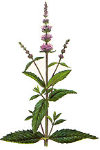

Thanks for the ant-fighting advice in a previous issue. We live in the deep South and have a lot of red ants, so I gave your advice a try and put spearmint around the animals' feed dishes. It worked like a charm.
I also dry spearmint and save it for rainy days: it works well to freshen a musty closet or the inside of a car. It's also nice added to a potpourri pot and simmered on the stove with a little cinnamon and/or vanilla extract.
Did I mention it makes for a nice cup of herbal tea? Here's the best part: the more you pick it, the more bountiful it becomes.
Joyce Warden
Gulfport, Maryland
|
 ELIZABETH DOWLE/QUARTO/ARTVILLE DISC Spearmint is a multipurpose garden herb. |
|
|